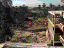
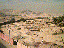
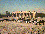
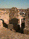
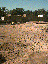
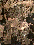
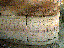
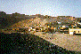

News from Luxor
Nigel Strudwick 16/1/95Many things always happen in Luxor, but this autumn/winter seems to have been particularly remarkable. From having spent several weeks there working in TT99, I have compiled the following (lengthy) notes, as of the second week of January 1995:
[ftp link reference deleted 14/04/2006]
The images were taken using an Apple Quicktake 100 digital camera; click on the small pictures to see the full images.
Flooding
People will be aware that there was news of severe flooding in Luxor in November.
There was a lot of rain in Luxor this autumn. There were three main separate rainfalls, on September 23, October 8, and November 2. Of these, the last was the most severe. There was one lot of rain at about 8 am and then more at about 11 am. Huge black clouds gathered, there was an incredibly heavy rainfall, and even hailstones were seen. A flash flood was formed from the confluence of large amounts of water rushing down from the different Wadis in the area of the Valley of the Kings on the West Bank. This turned into a torrent of water up to 2 m deep rushing down the road from the Valley. It continued down the recently rebuilt road through the area known as el Ginena, passing through the Muslim cemetery, through the forecourt of the mortuary temple of Sety I, and through sundry other places. The force of the torrent was such that it carried away most mud brick and some brick and concrete structures in its path. These were mainly houses, and it is estimated that between 100 and 200 houses were destroyed, and the occupants lost most of their possessions. There was apparently no loss of life, attributed to the time of day when the flood struck--if it had been during the night things would have been much much worse. Various houses in other parts of the West Bank were also destroyed by the rainfall or very localised flooding. Many of the tombs in the modern cemetery were destroyed.
Destroyed houses and the modern cemetery  - 
{kind=link}
{kind=link}
The authorities have moved only slowly to help those who suffered in the floods. A city of tents has been set up in the area of the Sety temple, in which those dispossessed are living. A sum of money has apparently been offered to help these people erect new homes, but it (LE 500) would seem inadequate, and stands in stark contrast with sums recently spent on tourist-orientated projects. Stories are also circulating of the inevitable slow disbursement of this money and of those attempting to gain from the suffering of others.
The monuments have also suffered to varying degrees. News reports noted flooding in the Valley of the Kings only. Many of the tombs did get water in them, such as the tomb of Tutankhamun, Amenhotep II, and Horemheb. Because these tombs are normally open, they were immediately inspected and appropriate measures, basically pumping, undertaken. Those tombs which have a pit part way down their corridors were saved by much of the water entering there. We visited most of the open tombs in our recent visit, and there was no obvious damage, although there were some "tide marks" visible, and many tombs smelled of having been wet. Of course, the longer term damage of the effect of the water in the rocks is less clear. I believe it is being proposed that the low tombs in the valley will be provided with better ways of excluding water.
One temple was particularly badly hit. This was the mortuary temple of Sety I, which was in the path of the flash flood, and this took away the main (modern) gate and various sections of the thick brick wall which had been so painstakingly built over the past 15 years. One or two stelae which stood near the first pylon or gateway were knocked flat, and the areas excavated by the German Archeological Institute were filled with mud and partly obliterated.
The Sety temple; reerected stela; cracks in the ground  -  - 
{kind=link}
{kind=link}
{kind=link}
I saw a 2 m high mark from where the water had stood in the front court, and the ground is still soft at the end of December (seven weeks after the disaster). Limestone blocks in the area of the first pylon are showing extreme indications of salting and are crumbling away. Some blocks which are not decaying seem to be exhibiting strange traces of a red colour.
Salt efflorescence; red colour in stone  - 
{kind=link}
{kind=link}
Visitors to the other temples in Luxor report an increase in salt activity from the soaking they received in the rain. It is clear that the problem of the increase in the subsurface water level has not been helped by the rains.
The hill of Sheikh abdel Qurna 
{kind=link}
It looks as if the private tombs of the Nobles have perhaps suffered the most. Water has entered a number of them--for example the well-known tourist tomb of Ramose, which is showing some traces of salting on the limestone. The famous tomb of Menna got very wet, although it does not appear to be damaged. The difficulty with the private tombs is their very number, and their varying degrees of accessibility. It is clear that the Antiquities Organisation have opened a number of those lower down in the hills which would appear to have been most at risk, and at least one of these has suffered the most serious damage I have yet seen resulting from the rains.
The tomb of Pairy (no 139) is quite low in the hill, but not by any means the lowest. It is, however, built into a stratum of the incredibly poor quality rock known in Thebes as tafl. When this type of stone is exposed to water, it rapidly absorbs the water, first increasing in size, and then disintegrating completely. Those who saw John Romer's television programme The Rape of Tutankhamun will have seen a graphic demonstration of the properties of this material. When the walls of the tomb of Pairy became wet, the base tafl material expanded and then collapsed, causing two of the three decorated walls in the tomb to fall to the ground. The situation was made worse by the fact that the painted plaster fell into standing water, and was thus further damaged. Since it inevitably took longer to get round to inspecting such tombs than those in the Valley of the Kings, it was several days before the damage was discovered. As there is no formal publication of this tomb, the restorers of the Antiquities Organisation have found it extremely difficult to put the scenes back together. I found some unpublished photographs in Chicago House which have (I hope) made this job somewhat less difficult. Accidents like this to me stress the importance of continuing to document and conserve the tombs.
There are reports of other problems too. For example, some damage seems to have happened to the tomb of Amenemopet (tomb 41), and the Antiquities Organisation are planning to begin work there soon. Who knows what other tombs are damaged, or which will start to exhibit signs of problems over the next few months? The task facing the Antiquities Organisation in Qurna is huge.
New Tombs
There is however good news in that several more tombs have been opened to visitors. In the Valley of the Kings, the tombs of Siptah, Ramesses VII, and Ay are now accessible. The entrance to the valley was pushed back 200 m to just before the tomb of Ramesses VII, so that the latter and Ramesses IV are now within the official boundary. The tomb of Ay is located in the West Valley and is a considerable walk or even taxi ride from the new rest house, but is well worth the visit, with its beautiful burial chamber containing a number of unusual scenes. For the opening of the tomb, the sarcophagus was brought back from the Cairo Museum. It was returned through the outer parts of the tomb in a manner not unlike that which must have been used in ancient times, namely ropes and wooden rollers, and it is a tribute to local Reis Aly el-Ghassab that the job was successfully completed. Once in the burial chamber it was carefully restored.
Three new private tombs have also been opened. They are those of Nefersekheru (no 296), Neferrenpet (no 178), and Djehutymose (no 295), all around a courtyard in the area known as el-Khokha. 296 and 178 are of the reign of Ramesses II, and should be on all tourists' visits as they give an important alternative view of the private tombs to the otherwise 18th dynasty ones which are mainly visited. Tomb 295 is a lovely Thutmoside chapel accessible now via the tomb of Nefersekheru.
Tourism
When we arrived in Luxor at the beginning of December, we felt that the level of tourism was the quietest we had perhaps ever seen. This is always a quiet period, but this year it was worse than ever. The level of visitors rose sharply a few days before Christmas, but started to decease again shortly after the New Year. The prospects are not good at present, even though there have been no more terrorist incidents affecting foreigners. There are restrictions on foreigners travelling north of Luxor, and those travelling south by road are required to follow military convoys.
Aida and the Luxor Renaissance
Many will have heard about the performance of Mori's travelling production of Verdi's Aida in front of the temple of Hatshepsut at Deir el Bahari in late November. This was the most prominent of a number of events in Luxor in November billed as the "Luxor Renaissance", which included a short conference on work in Luxor and various recreations of ancient rites.
Setting up Aida was a major undertaking. Not only was a large seating arrangement erected just outside the temple enclosure at Deir el Bahari, but the car park there was rebuilt, all the shops rearranged, and the entire road rebuilt. A military pontoon bridge over the Nile almost in front of Karnak was set up, and a brand-new road from there to the main north-south road on the west bank was built on land compulsorily purchased at a very low rate. These latter were intended only for visitors to Aida! When the time came for the performances, up to 30,000 soldiers were brought in to provide security, and visitors apparently had the spectacle of seeing tanks and other equipment in various locations, as well as armed personnel all around Deir el Bahari. Five performances of the opera were planned, but only three took place due to the number of bookings. They coincide with another period of cold weather, and blankets had to be provided. The opera was broadcast on television. I am told that the standard scenery of the production was so large that it obscured much of the temple during the proceedings, making some wonder why the opera was staged in such a way as to obscure the beautiful environment of Deir el Bahari.
As at the beginning of January, the seating and other paraphernalia still stands in front of the temple, and is not a pretty sight. Rumour has it that the contractors will not take it away until they have been paid. The pontoon bridge only disappeared at the beginning of January.
Why Aida was staged is really not clear, and it remains to be seen whether it has boosted tourist confidence in Egypt. Estimates of the cost of this work vary between LE 12-40 million. Readers might want to contrast the efforts made for this project with the way the inhabitants who lost their houses in the floods are being treated.
Robberies
When the Italian mission to the tomb of Sheshonq (no 27) arrived in September, it was discovered that about nine blocks from the walls had been removed. The tomb itself is not roofed over at present, and is relatively easy of access, but it is suspected that there must have been some collusion with the guards. One robber was even found in the tomb in the daytime, and was later apprehended.
There is also an investigation taking place as to a robbery from a magazine in North Karnak. Since starting writing this note, I came across an article in al-Ahram Weekly about recent theft.
One result from these robberies is that the number of guards is being increased by about 60, so that each set of guards has a smaller area to watch over. One advantage of more tombs being open than before is that it is much easier to check on damage of any type and deter thefts in tombs which are regularly open.
Archaeological work
The Antiquities Service has seen some changes in the area. Dr Mohamed el-Saghir continues in overall charge, but he now has the added duties of Chief Inspector of Upper Egypt, and so is in Cairo more often than he was. Dr Mohamed Nasr now assists him, and his place as Director on the West Bank has been taken by Mr Sabri Abdel Aziz. They have all had a difficult time recently will the floods, Aida, and the robberies.
Autumn and early winter in Thebes seem to have been unusually quiet archaeologically. On the East Bank, the usual seasons of the Franco-Egyptian Centre and of Jean and Helen Jacquet at Karnak took place. The Higher Committee for Antiquities has let a contract for the dismantling and rebuilding of the sun court of Amenhotep III in Luxor temple.
On the West Bank, Chicago House continues at the small temple of Medinet Habu, and the French CNRS expedition works on at the Ramesseum. This year the latter have been working in the chapel of Merytamun, as well as continuing with conservation and restoration in the main temple. No work has yet taken place in the Sety temple, nor that of Merenptah. Two Polish expeditions have been working in the temple of Deir el Bahari.
The Valley of the Kings has been busy. The Antiquities Service has been this year working on the tombs which they have now opened (above). John Rose worked in tomb KV39 in September, and the expedition from Hamburg came to work in the tomb of Bay in about November, but were hampered by the rain water. The Japanese mission came in December to continue in the tomb of Amenhotep III, as did Edwin Brock to work on objects from the tomb of Ramesses VII and the sarcophagus of Merenptah, and Leila Brock to continue with her study of KV55.
There has been relatively little activity in the private tombs. We have been active in tomb 99 of Sennefer, and Betsy Bryan's mission to tomb 92 arrived at the beginning of January. Tomb 92 has been the subject of some cleaning by the Antiquities Service, and some restoration has been done in the tomb of Menna, in addition to various emergency works noted above. As we left, Andrea Gnirs arrived to continue work in TT95.
It is likely that there will be an increase in activity by foreign missions in the next two months.
Unless otherwise indicated, © Nigel Strudwick 1994-2016